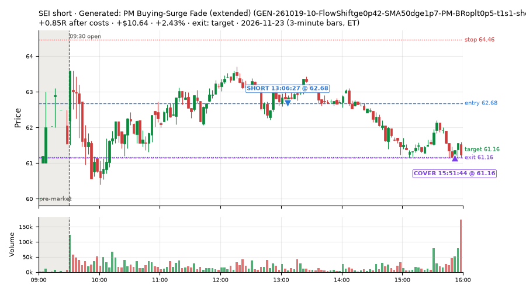
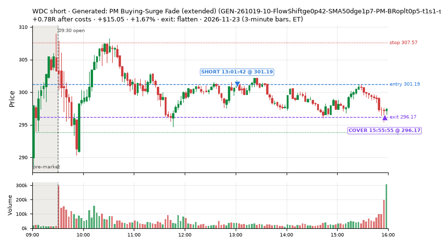
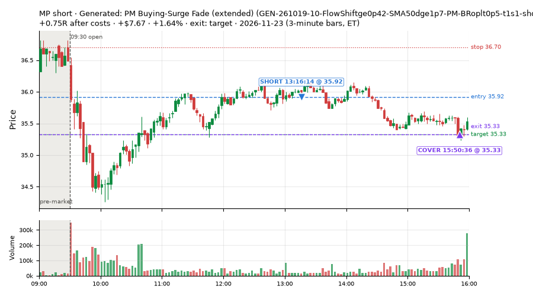
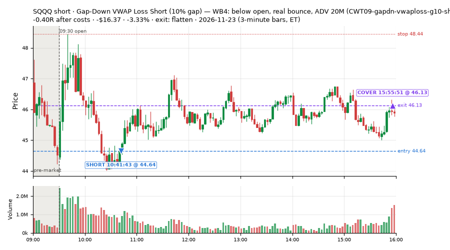
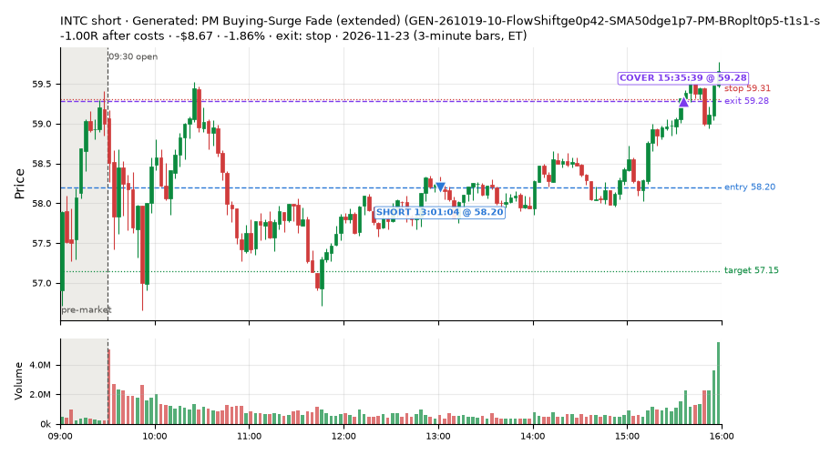
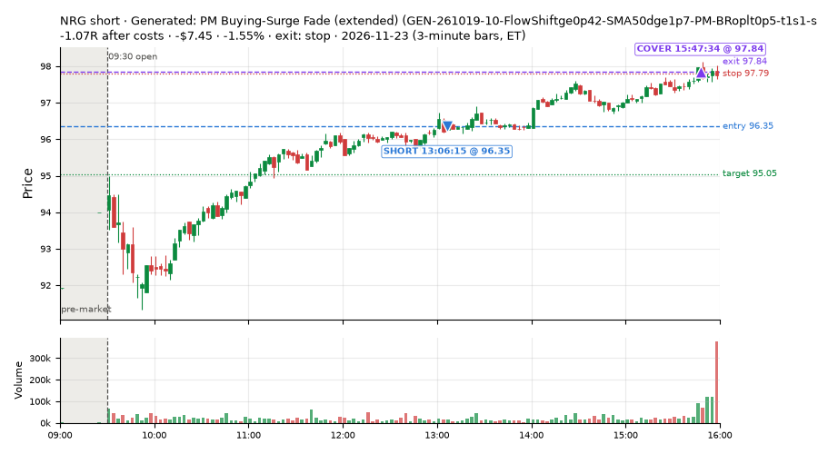
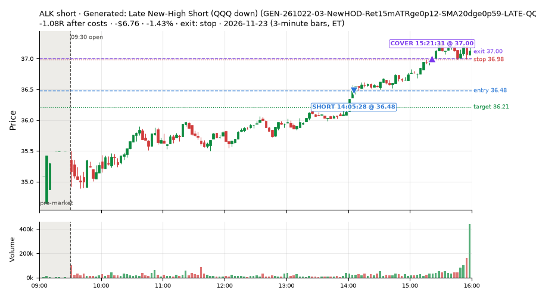
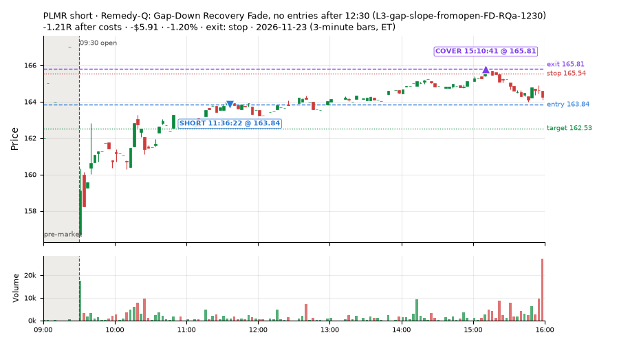

75 trades · win rate 59% · P/L $69.85
PROBATION: no live setup has passed both locked test periods. 10 owner-directed setups added 2026-10-08 (MarcoFlow top 5 + 5 new), untested live. RW6G1 (RW6 + VWAP band guard) added 2026-10-09, probation.

| Symbol | Setup | Side | In | Out | Entry | Exit | Exit reason | % gained | P/L |
|---|---|---|---|---|---|---|---|---|---|
| SEI | Generated: PM Buying-Surge Fade (extended) (GEN-261019-10-FlowShiftge0p42-SMA50dge1p7-PM-BRoplt0p5-t1s1-short) | short | 13:06 | 15:51 | 62.68 | 61.16 | target | +2.43% | $10.64 |
| WDC | Generated: PM Buying-Surge Fade (extended) (GEN-261019-10-FlowShiftge0p42-SMA50dge1p7-PM-BRoplt0p5-t1s1-short) | short | 13:01 | 15:55 | 301.19 | 296.17 | flatten | +1.67% | $15.05 |
| MP | Generated: PM Buying-Surge Fade (extended) (GEN-261019-10-FlowShiftge0p42-SMA50dge1p7-PM-BRoplt0p5-t1s1-short) | short | 13:16 | 15:50 | 35.92 | 35.33 | target | +1.64% | $7.67 |
| Symbol | Setup | Side | In | Out | Entry | Exit | Exit reason | % lost | P/L |
|---|---|---|---|---|---|---|---|---|---|
| SQQQ | CWT09-gapdn-vwaploss-g10-short-WB4 | short | 10:41 | 15:55 | 44.64 | 46.13 | flatten | -3.33% | $-16.37 |
| INTC | GEN-261019-10-FlowShiftge0p42-SMA50dge1p7-PM-BRoplt0p5-t1s1-short | short | 13:01 | 15:35 | 58.20 | 59.28 | stop | -1.86% | $-8.67 |
| NRG | GEN-261019-10-FlowShiftge0p42-SMA50dge1p7-PM-BRoplt0p5-t1s1-short | short | 13:06 | 15:47 | 96.35 | 97.84 | stop | -1.55% | $-7.45 |
| ALK | GEN-261022-03-NewHOD-Ret15mATRge0p12-SMA20dge0p59-LATE-QQQdn-t05s1-short | short | 14:05 | 15:21 | 36.48 | 37.00 | stop | -1.43% | $-6.76 |
| PLMR | L3-gap-slope-fromopen-FD-RQa-1230 | short | 11:36 | 15:10 | 163.84 | 165.81 | stop | -1.20% | $-5.91 |








Signal to fill: median 1s, 90th percentile 2s (75 trades). Bars close each minute; the order follows the bar close.
Best excursion (MFE): median 0.42R; worst (MAE) median 0.38R. 33% of trades never got +0.25R in our favour; 1 reached +1R and still closed at or below 0.
| Symbol | Setup | Best R | Worst R | Closed R |
|---|---|---|---|---|
| EL | NS4-pm-vwap-reclaim-oversold-short-FD | +0.92 | -1.01 | -1.11 |
| MRSH | RW7-gapdn-bounce-early-short-FD | +0.51 | -1.02 | -1.17 |
| PLMR | L3-gap-slope-fromopen-FD-RQa-1230 | +0.36 | -1.06 | -1.21 |
| MDY | MF1-945-flowsell-vwapup | +0.17 | -1.11 | -1.35 |
| PLMR | L3-gap-slope-fromopen-FD-RQa-1230 | +0.29 | -1.05 | -1.15 |
| Entry time | Trades | Win | Avg R | P/L |
|---|---|---|---|---|
| 09:50-10:30 | 9 | 67% | +0.22 | $17.64 |
| 10:30-11:30 | 7 | 43% | -0.42 | $-18.27 |
| 11:30-13:00 | 15 | 60% | +0.07 | $11.39 |
| 13:00-14:00 | 29 | 76% | +0.23 | $77.89 |
| 14:00-16:00 | 15 | 27% | -0.30 | $-18.80 |
| Setup | Trades | Win | Avg R after costs | Adj R (net of SPY) | Avg R ex-market (all sessions) | P/L |
|---|---|---|---|---|---|---|
| Gap-Down VWAP Loss Short (10% gap) — WB4: below open, real bounce, ADV 20M (CWT09-gapdn-vwaploss-g10-short-WB4) | 1.0 | 0% | -0.40 | -0.46 | – | $-16.37 |
| Failed Prior-Day-Low Break Long (0.1 ATR, low vol) — WB3: stop 0.45 ATR + gap-down >= 0.5% (CWT14-failbrk-pdl-p10-lowvol-long-WB3) | 11.0 | 91% | +0.15 | +0.08 | -0.16 (beta +0.42, n 84) | $14.74 |
| Generated: PM Buying-Surge Fade (extended) (GEN-261019-10-FlowShiftge0p42-SMA50dge1p7-PM-BRoplt0p5-t1s1-short) | 22.0 | 68% | +0.13 | +0.06 | +0.20 (beta +0.19, n 56) | $56.13 |
| Generated: Midday VWAP Loss Buy (fading) (GEN-261020-06-VWAPxDn-Slope6lem0p011-BarsSinceHODge35-MID-BRoplt0p5-holdtr-long) | 7.0 | 86% | +0.69 | +0.56 | -0.16 (beta +1.82, n 21) | $26.39 |
| Generated: Late New-High Short (QQQ down) (GEN-261022-03-NewHOD-Ret15mATRge0p12-SMA20dge0p59-LATE-QQQdn-t05s1-short) | 10.0 | 30% | -0.30 | -0.48 | +0.24 (beta +1.69, n 17) | $-11.36 |
| Generated: PM Prior-Low Bounce Short (GEN-261022-10-EMAdChgge0p15-ORLdistge0p41-PDLdistle0p14-PM-BRoplt0p5-holdtr-short) | 2.0 | 0% | -0.61 | -0.74 | -0.23 (beta -0.46, n 11) | $-5.33 |
| Index Dip Bounce 3 3x S&P (IDX3-spy075-0955-3x-trail) | 1.0 | 100% | +0.55 | +0.32 | – | $8.54 |
| Remedy-Q: Gap-Down Recovery Fade, no entries after 12:30 (L3-gap-slope-fromopen-FD-RQa-1230) | 3.0 | 33% | -0.52 | -0.43 | – | $-8.24 |
| Gap-Down Bounce-off-Low Fade (all day) — WB4: bounce > 0.82 ATR, RSI5 ≥ 50, 75-min hold (L3-gap-slope-lowdist-FD-WB4) | 1.0 | 0% | -0.30 | -0.04 | – | $-1.50 |
| Early Sellers Above VWAP (MF1-945-flowsell-vwapup) owner-directed; holdouts once: Sep-Oct +0.169R n86, Apr-Jun -0.050R n429 | 2.0 | 0% | -1.33 | -0.93 | -0.30 (beta -1.56, n 7) | $-4.54 |
| Afternoon VWAP Reclaim Fade (all day) (NS4-pm-vwap-reclaim-oversold-short-FD) | 3.0 | 33% | -0.63 | -0.39 | -0.54 (beta -1.96, n 22) | $-2.51 |
| Gap-Down Early Bounce Short (all day) (RW7-gapdn-bounce-early-short-FD) | 12.0 | 58% | +0.27 | +0.26 | +0.00 (beta -0.56, n 317) | $13.90 |
Market direction (SPY, beta 1) accounted for $30.90 of today's $69.85; the rest ($38.95) came from the setups themselves. Avg R net of SPY: -0.02 (incl. a hedge leg's cost; report only).
20 setups live today. Today: 231 signals, 75 taken, 2 lost because another setup held the symbol (1%). Since 2026-11-12 (8 sessions): 1774 signals, 794 taken, 12 lost to other setups (1%). Peak open positions today 54 of 400 slots. Earnings blackout removed 148 symbols before scanning.
Simulated playing time (not live): 977 what-if trades of signals not taken, avg -0.03R, 52% winners; of them 12 lost to another setup (avg -0.23R).
Silent: GEN-261028-04-ORBfailUp-RSI14le22-Gaplem1p2-LATE-BRvwgt0p5-holdtr-long · Starved: MF1-945-flowsell-vwapup
| Prio | Setup | Today sig / taken | Sessions | Signals / taken / trades | Taken/day | Expected/day | Lost to other setups | Lost to (setup n) | Top skip reasons | SIMULATED: not-taken n / avg R / win | Verdict |
|---|---|---|---|---|---|---|---|---|---|---|---|
| 1 | Remedy-Q: Gap-Down Recovery Fade, no entries after 12:30 L3-gap-slope-fromopen-FD-RQa-1230 | 40 / 3 | 1 | 40 / 3 / 3 | 3.00 | – | 0 | – | not shortable / shorts off 36, spread / quote / size 1 | 37 / -0.66R / 19% | ok 15.0 entries/week |
| 2 | Gap-Down Bounce-off-Low Fade (all day) — WB4: bounce > 0.82 ATR, RSI5 ≥ 50, 75-min hold L3-gap-slope-lowdist-FD-WB4 | 20 / 1 | 5 | 72 / 4 / 4 | 0.80 | – | 0 | – | not shortable / shorts off 58, spread / quote / size 7, other 3 | 68 / -0.46R / 29% | slow 4.0 entries/week; ~15 weeks to 60 trades |
| 3 | Failed Prior-Day-Low Break Long (0.1 ATR, low vol) — WB3: stop 0.45 ATR + gap-down >= 0.5% CWT14-failbrk-pdl-p10-lowvol-long-WB3 | 16 / 11 | 5 | 133 / 84 / 84 | 16.80 | – | 1 | RW7-gapdn-bounce-early-short-FD 1 | spread / quote / size 38, other 10, symbol held by another setup 1 | 48 / -0.17R / 62% | ok 84.0 entries/week |
| 4 | Gap-Down VWAP Loss Short (10% gap) — WB4: below open, real bounce, ADV 20M CWT09-gapdn-vwaploss-g10-short-WB4 | 19 / 1 | 5 | 22 / 1 / 1 | 0.20 | – | 0 | – | not shortable / shorts off 20, spread / quote / size 1 | 21 / -0.41R / 5% | slow 1.0 entries/week; ~60 weeks to 60 trades |
| 5 | Index Dip Bounce 3 3x S&P IDX3-spy075-0955-3x-trail | 1 / 1 | 8 | 1 / 1 / 1 | 0.12 | – | 0 | – | – | 0 / – | slow 0.6 entries/week; ~96 weeks to 60 trades |
| 6 | * Oversold Slope Turn with Breadth Turning Up (near-miss) LD5-st2-breadthup-t05s1-long | 0 / 0 | 8 | 4 / 4 / 4 | 0.50 | – | 0 | – | – | 0 / – | slow 2.5 entries/week; ~24 weeks to 60 trades |
| 7 | Generated: Late-AM Strong-Stock Dip Buy GEN-261021-05-RSIslopelem14-ORHdistge0p42-LAM-BRvwlt0p3-t1s05-long | 0 / 0 | 6 | 42 / 6 / 6 | 1.00 | – | 0 | – | other 25, spread / quote / size 11 | 36 / +0.32R / 56% | slow 5.0 entries/week; ~12 weeks to 60 trades |
| 8 | Quiet Downtrend Bounce Short (near-miss) NM-AMS-N1-quiet-morning-short | 2 / 0 | 8 | 10 / 5 / 5 | 0.62 | – | 0 | – | not shortable / shorts off 3, spread / quote / size 1, other 1 | 5 / +0.11R / 80% | slow 3.1 entries/week; ~19 weeks to 60 trades |
| 9 | Generated: Midday VWAP Loss Buy (fading) GEN-261020-06-VWAPxDn-Slope6lem0p011-BarsSinceHODge35-MID-BRoplt0p5-holdtr-long | 9 / 7 | 6 | 38 / 21 / 21 | 3.50 | – | 1 | RW7-gapdn-bounce-early-short-FD 1 | other 10, spread / quote / size 6, symbol held by another setup 1 | 17 / -0.73R / 12% | ok 17.5 entries/week |
| 10 | Generated: Lunch Trend Buy (MACD rising) GEN-261023-10-MACDhge0p12-VWAPcrossesle0-EMAdiffge0p16-LUNCH-BRvwlt0p4-hold-long | 1 / 0 | 6 | 16 / 9 / 9 | 1.50 | – | 0 | – | other 6, spread / quote / size 1 | 7 / -0.11R / 43% | slow 7.5 entries/week; ~8 weeks to 60 trades |
| 11 | Generated: Late New-High Short (QQQ down) GEN-261022-03-NewHOD-Ret15mATRge0p12-SMA20dge0p59-LATE-QQQdn-t05s1-short | 17 / 10 | 6 | 34 / 17 / 17 | 2.83 | – | 0 | – | not shortable / shorts off 11, spread / quote / size 3, other 3 | 17 / +0.12R / 71% | slow 14.2 entries/week; ~4 weeks to 60 trades |
| 12 | Generated: PM Prior-Low Bounce Short GEN-261022-10-EMAdChgge0p15-ORLdistge0p41-PDLdistle0p14-PM-BRoplt0p5-holdtr-short | 13 / 2 | 6 | 27 / 11 / 11 | 1.83 | – | 0 | – | not shortable / shorts off 10, spread / quote / size 5, other 1 | 16 / -0.17R / 56% | slow 9.2 entries/week; ~7 weeks to 60 trades |
| 13 | Generated: PM Buying-Surge Fade (extended) GEN-261019-10-FlowShiftge0p42-SMA50dge1p7-PM-BRoplt0p5-t1s1-short | 40 / 22 | 6 | 139 / 56 / 56 | 9.33 | – | 1 | GEN-261023-10-MACDhge0p12-VWAPcrossesle0-EMAdiffge0p16-LUNCH-BRvwlt0p4-hold-long 1 | not shortable / shorts off 52, spread / quote / size 15, other 14 | 82 / -0.19R / 43% | ok 46.7 entries/week |
| 14 | Early Sellers Above VWAP MF1-945-flowsell-vwapup | 20 / 2 | 8 | 66 / 7 / 7 | 0.88 | 5.33 | 0 | – | spread / quote / size 39, other 18, not shortable / shorts off 2 | 59 / +0.35R / 49% | starved 0.88 entries/day vs ~5.33 expected |
| 15 | Afternoon VWAP Reclaim Fade (all day) NS4-pm-vwap-reclaim-oversold-short-FD | 7 / 3 | 8 | 54 / 22 / 22 | 2.75 | 3.57 | 0 | – | other 12, spread / quote / size 11, not shortable / shorts off 9 | 32 / -0.05R / 50% | slow 13.8 entries/week; ~4 weeks to 60 trades |
| 16 | Gap-Down Early Bounce Short (all day) RW7-gapdn-bounce-early-short-FD | 24 / 12 | 6 | 608 / 317 / 317 | 52.83 | 59.92 | 8 | CWT14-failbrk-pdl-p10-lowvol-long-WB3 7, CWT05-flush-m05-v3-long 1 | spread / quote / size 106, other 87, per-setup cap 59 | 291 / +0.15R / 62% | ok 264.2 entries/week |
| 17 | Late Sharp Dip in an Uptrend, Long ULT-14-snap-long | 0 / 0 | 2 | 0 / 0 / 0 | 0.00 | – | 0 | – | – | 0 / – | quiet - wait no signals in 2 session(s); too early to tell |
| 18 | Late Sharp Pop in a Downtrend, Short ULT-14-snap-short | 0 / 0 | 2 | 0 / 0 / 0 | 0.00 | – | 0 | – | – | 0 / – | quiet - wait no signals in 2 session(s); too early to tell |
| 19 | Generated: Morning Breakdown Short (volatile) GEN-261022-07-Z12lem1p9-FlowShiftlem0p96-ATRdge3p6-AM-BRopgt0p5-t1s1-short | 0 / 0 | 2 | 0 / 0 / 0 | 0.00 | – | 0 | – | – | 0 / – | quiet - wait no signals in 2 session(s); too early to tell |
| 20 | 15-Minute Opening Range Breakout, Wide Stop (beginner) BEG-ORB-orb15-inplay-stopOR | 2 / 0 | 1 | 2 / 0 / 0 | 0.00 | – | 0 | – | trigger missed between polls 1, spread / quote / size 1 | 2 / +0.01R / 50% | slow no entries yet |
Every trade is attached as a CSV you can open and edit in Excel or Google Sheets. Live page: https://misiti15.github.io/MCF/live/